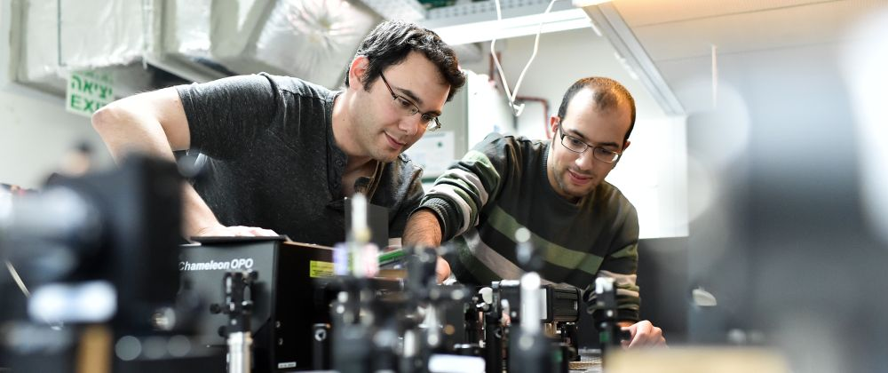

תואר שני הוא בדיוק המקום לגלות, להעמיק, להיות יצירתיים. להיות חופשיים להחליט במה אתם מתעמקים ומה אתם חוקרים.
למה לימודי תארים מתקדמים בהנדסת חשמל?
ההיבט ה”חומרי”: במציאות של ימינו, לאור התחרות הגוברת בין מדינות המשקיעות בתחום ההיי-טק, תארים מתקדמים בהנדסת חשמל/הנדסת מחשבים הופכים לנכס חיוני. הקשר בין תואר מתקדם לבין מנהיגות בתחום הטכנולוגיה כבר ברור לכל. לדוגמה, כחצי מהסטארט-אפים הישראליים (בתחומי הנדסת חשמל/הנדסת מחשבים) מתהדרים במייסד טכני בעל תואר שלישי. יתרה מזאת, ניכר כי “טכנולוגיה עמוקה” של חברה (אשר מתבטאת בעיקר במספר העובדים בעלי תארים מתקדמים) מגדילה משמעותית את שווי השוק שלה. לעומת זאת, ניכר מחסור בבעלי תואר שלישי בתחומים אלה בישראל: בין בוגרי הנדסת חשמל ומחשבים רק 2% הם בעלי תואר PhD ו-10% בעלי תואר MSc (בהשוואה ל-9% ול-50% בהתאמה בארצות הברית). כתוצאה מכך הולך וגובר הביקוש לבעלי תואר שני ושלישי בתעשייה.
ההיבט ה”רוחני”: רק באמצעות לימודים ומחקר לתארים מתקדמים תוכלו:
- להעצים בצורה משמעותית את יכולותיכם האינטלקטואליות
- להיחשף לעולם מחקרי חדש
- לפתוח דלת לקריירה אקדמית
למה ללמוד הנדסת חשמל בטכניון?
מוניטין בין-לאומי ללא תחרות
ועדת הערכה בין-לאומית, בראשות פרופ’ רוברט גלאגר מה-MIT קבעה כי:
- “הפקולטה להנדסת חשמל ומחשבים הנה פקולטה אקדמית מצטיינת בהוראה ובמחקר ומדינת ישראל צריכה להתייחס אליה כאל משאב לאומי משמעותי”
- הפקולטה היא “אחת מעשר הפקולטות המובילות” בעולם ללימודי הנדסת חשמל; “בשורה אחת עם מחלקות במוסדות אקדמיים כגון סטנפורד, MIT, ברקלי, אילינוי, מישיגן, סן דיאגו ועוד”
- בכמה תחומי מחקר “הפקולטה נחשבת לטובה בעולם”
- “תוכניות הלימודים בתואר הראשון והשני מצוינות”
לאחרונה זכו ממצאים אלה לאישור מצד הוועדה להערכה של לימודי הנדסת חשמל ואלקטרוניקה שמינתה המועצה להשכלה גבוהה (המל”ג).
היקף המחקר הנרחב ביותר
הפקולטה פועלת כמרכז מצוינות למחקר יישומי ותיאורטי, ותורמת לקידום הידע בהנדסת חשמל ומחשבים בישראל ובעולם כולו. המחקר בפקולטה עוסק בכל התחומים העיקריים באלקטרוניקה, מחשבים ותקשורת, ובכלל זה בתחומי מחקר חדשניים.
הנחייה של מומחים מובילים ברמה בין-לאומית
חברי הסגל בפקולטה הם חוקרים בעלי שם עולמי המתבטא ברשימת הישגים ובפרסים בין-לאומיים. יתר על כן, הפקולטה הצליחה לגייס את החוקרים הצעירים הטובים ביותר בישראל, כפי שמעידות 12 מלגות “אלון” שקיבלו חברי הסגל הצעירים שגייסנו בשנים האחרונות. למיטב ידיעתנו, זהו השיעור הגבוה ביותר של מלגות יוקרתיות שניתנו לסגל בפקולטה טכנולוגית או מדעית במוסד אקדמי כלשהו בישראל.
תשתית מעולה במחקר ובהוראה
- 17 מעבדות מודרניות
- מלגות אטרקטיביות וסביבת עבודה מעולה
- תוכנית לימודים מאוזנת המשלבת בין תיאוריה לבין יישומים מתקדמים
המוניטין של הבוגרים שלנו
בוגרי הנדסת חשמל של הטכניון נהנים ממוניטין ראוי לציון הן באוניברסיטאות הידועות ביותר בארצות הברית והן בחברות סטארט-אפ ישראליות.